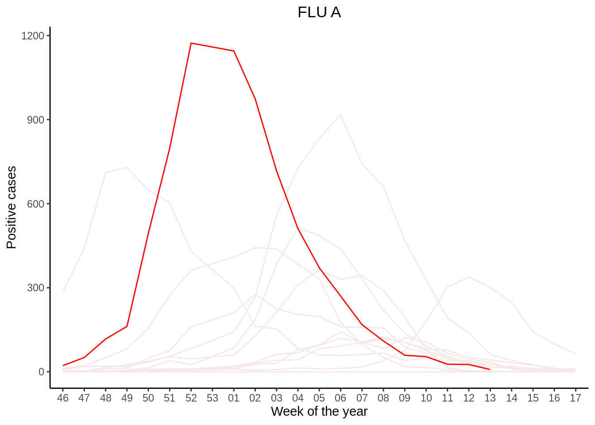

Flu News Italy
1
The Italian Influenza Surveillance
2
Season 2012 / 2013
3
Season 2013 / 2014
4
Season 2014 / 2015
5
Season 2015 / 2016
6
Season 2016 / 2017
7
Season 2017 / 2018
8
Season 2018 / 2019
9
Season 2019 / 2020
10
Season 2020 / 2021
11
Season 2021 / 2022
12
Season 2022 / 2023
13
Influenza like illness
14
Cumulative incidence
15
Comparison Flu A
16
Comparison Flu B
GitHub repository
InfluNet
Part 16
Comparison Flu B
